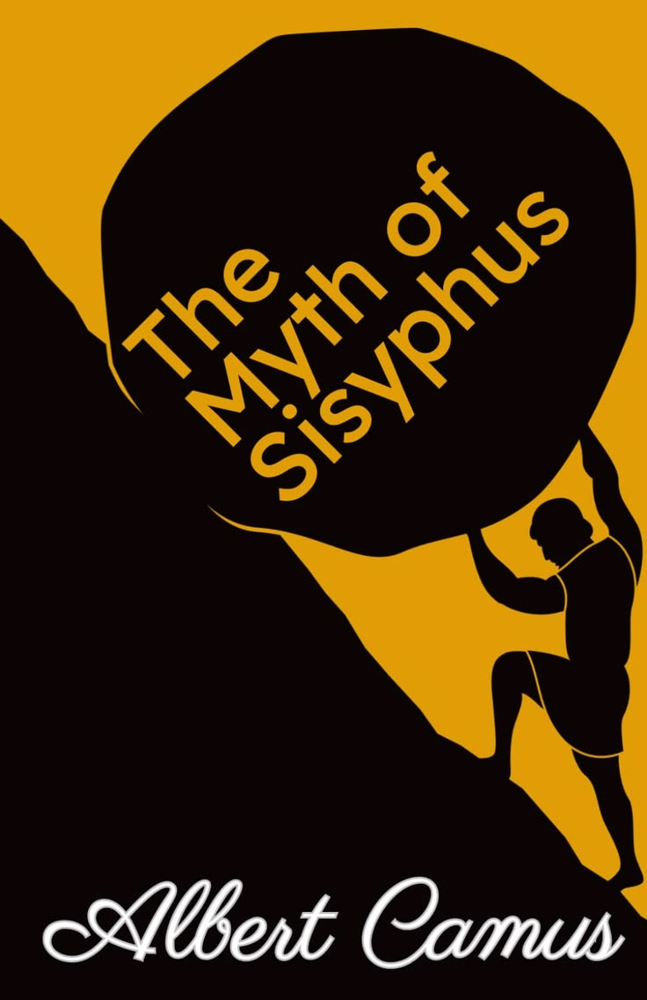

📚 Beginner Reading Path
New to philosophy? Start here. These books introduce philosophy without requiring prior knowledge.

Meditations
Marcus Aurelius
Personal reflections on discipline, Stoicism, resilience, and inner peace. One of the greatest works of practical philosophy ever written.

Bhagavad Gita
Vyasa
A timeless dialogue between Krishna and Arjuna exploring duty, self-realization, devotion, and the purpose of human life.

Apology
Plato
Plato's account of Socrates' defense during his trial, introducing critical thinking, virtue, and the pursuit of truth.

Dhammapada
Gautama Buddha
A collection of Buddha's teachings focused on mindfulness, compassion, wisdom, and the path toward enlightenment.

Tao Te Ching
Lao Tzu
A poetic classic of Taoism teaching harmony with nature, simplicity, humility, and effortless action.

The Republic
Plato
Plato's masterpiece exploring justice, the ideal society, education, and the qualities of the philosopher king.

Letters from a Stoic
Seneca
A collection of letters offering timeless advice on resilience, virtue, emotions, and living a meaningful life.
.jpg)
On Liberty
John Stuart Mill
A classic defense of individual freedom, free speech, democracy, and the limits of governmental power.

The Myth of Sisyphus
Albert Camus
Camus explores absurdism, asking whether life can have meaning in a universe without inherent purpose.

Beyond Good and Evil
Friedrich Nietzsche
Nietzsche challenges traditional morality, religion, and truth while encouraging readers to question inherited values.